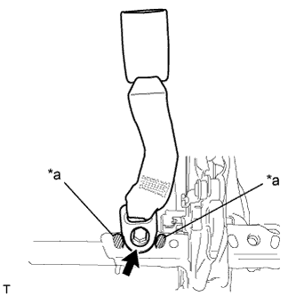
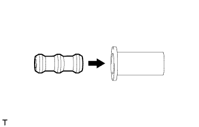
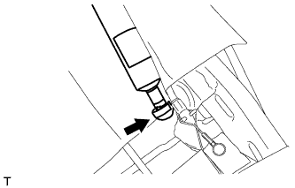
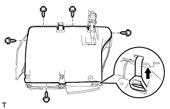
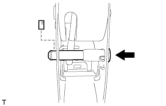
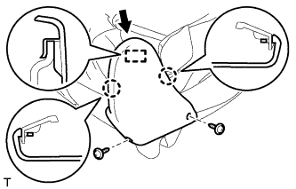
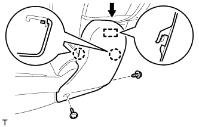

ЗАМОК ЦЕНТРАЛЬНОГО РЕМНЯ БЕЗОПАСНОСТИ ЗАДНЕГО СИДЕНЬЯ В СБОРЕ (для моделей с опускаемым сиденьем раздельного типа 60/40 с левой стороны) > УСТАНОВКА |
| 1. УСТАНОВИТЕ ЗАМОК РЕМНЯ БЕЗОПАСНОСТИ ПРАВОГО ЗАДНЕГО СИДЕНЬЯ № 1 В СБОРЕ |
|  |
Закрепите ремень безопасности болтом.
| *a | Выступающая часть |
| 2. УСТАНОВИТЕ НАКЛАДКУ ПРАВОЙ ПЕТЛИ ЗАДНЕГО СИДЕНЬЯ № 2 |
Введите в зацепление 3 захвата, чтобы установить крышку.
| 3. УСТАНОВИТЕ НАКЛАДКУ ПЕТЛИ ЛЕВОГО ЗАДНЕГО СИДЕНЬЯ № 2 |
Введите в зацепление 3 захвата, чтобы установить крышку.
| 4. УСТАНОВИТЕ НИЖНЮЮ КРЫШКУ ПОДУШКИ ЛЕВОГО ЗАДНЕГО СИДЕНЬЯ В СБОРЕ |
Временно установите нижнюю крышку на каркас подушки сиденья.
| 5. УСТАНОВИТЕ ОПОРНУЮ ПРУЖИНУ ПОДУШКИ ЗАДНЕГО СИДЕНЬЯ |
Установите пружину на раму подушки сиденья
| 6. УСТАНОВИТЕ ПОДКЛАДКУ ЗАМКА НОЖКИ СКЛАДЫВАЮЩЕГОСЯ СИДЕНЬЯ |
|  |
Установите подушку на защитный элемент.
| 7. УСТАНОВИТЕ КРАЕВОЕ УКРЕПЛЕНИЕ ПОДУШКИ ЗАДНЕГО СИДЕНЬЯ |
Установите защитный элемент на каркас подушки.
| 8. УСТАНОВИТЕ ПЕТЛЮ ПРАВОГО ЗАДНЕГО СИДЕНЬЯ В СБОРЕ |
Установите петлю.
Установите штифт на петлю.
Установите новое разрезное уплотнение.
| 9. УСТАНОВИТЕ СТОЙКУ ЗАДНЕГО СИДЕНЬЯ В СБОРЕ |
Подсоедините шаровой шарнир стойки сиденья к петле сиденья.
| 10. УСТАНОВИТЕ ПЕТЛЮ ЛЕВОГО ЗАДНЕГО СИДЕНЬЯ В СБОРЕ |
Установите пружину шарового шарнира стойки сиденья.
Временно установите петлю сиденья и стойку сиденья как единый узел.
Поднимите нижнюю крышку.
|  |
Подсоедините стойку сиденья к раме подушки сиденья.
|  |
Подсоедините ручку отпускания регулятора наклона к нижней крышке.
Заверните 5 винта.
Установите нижнюю крышку, для чего введите в зацепление 10 захватов.
Установите штифт на петлю.
Установите новое разрезное уплотнение.
| 11. УСТАНОВИТЕ НАПРАВЛЯЮЩУЮ ШТИФТА ПЕТЛИ ЗАДНЕГО СИДЕНЬЯ |
Введите в зацепление 4 захвата, чтобы установить направляющую штифта.
| 12. УСТАНОВИТЕ ШТИФТ РЫЧАГА ОТПИРАНИЯ НАПРАВЛЯЮЩЕЙ СИДЕНЬЯ В СБОРЕ |
|  |
Установите штифт, как показано на рисунке.
Установите стопор.
| 13. УСТАНОВИТЕ ЛЕВУЮ ВНУТРЕННЮЮ КРЫШКУ РЕГУЛЯТОРА НАКЛОНА |
Введите в зацепление 2 захвата, чтобы закрепить крышку.
Заверните 2 винта.
| 14. УСТАНОВИТЕ ПОДУШКУ ЗАДНЕГО СИДЕНЬЯ № 2 |
Введите в зацепление 2 крюка.
|  |
Присоедините направляющую и 2 захвата, чтобы закрепить щиток.
Заверните 2 винта.
| 15. УСТАНОВИТЕ ОТКИДНУЮ КРЫШКУ ПРАВОГО ЗАДНЕГО СИДЕНЬЯ № 1 |
Введите в зацепление 2 крюка.
Присоедините направляющую и 2 захвата, чтобы закрепить щиток.
Заверните 2 винта.
| 16. УСТАНОВИТЕ ОТКИДНУЮ КРЫШКУ ЛЕВОГО ЗАДНЕГО СИДЕНЬЯ |
|  |
Присоедините направляющую и 2 захвата, чтобы закрепить щиток.
Заверните 2 винта.
| 17. УСТАНОВИТЕ ЛЕВОЕ ЗАДНЕЕ СИДЕНЬЕ № 1 В СБОРЕ |
Установите левое заднее сиденье № 1 в сборе (Нажмите здесь).